Guide
What Riftbound is
Riftbound is Riot Games' trading card game, set in the world of League of Legends. Most games are one against one; some events play two against two or free-for-all.
You score points by taking battlefields (conquering) and keeping them into your next turn (holding). 8 points wins a standard game.
How to play
Your deck
A Legend, its Chosen Champion, a Main deck of 40 cards, 12 runes and 3 battlefields.
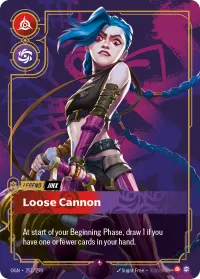
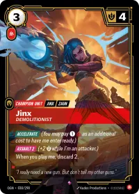
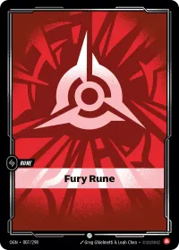
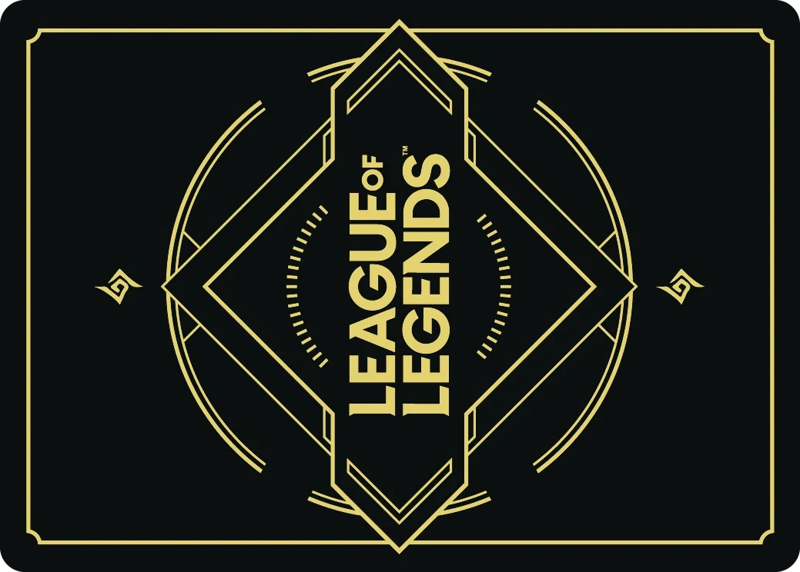
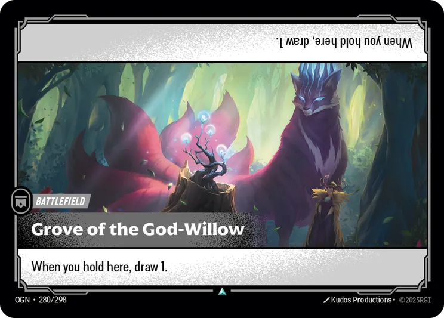
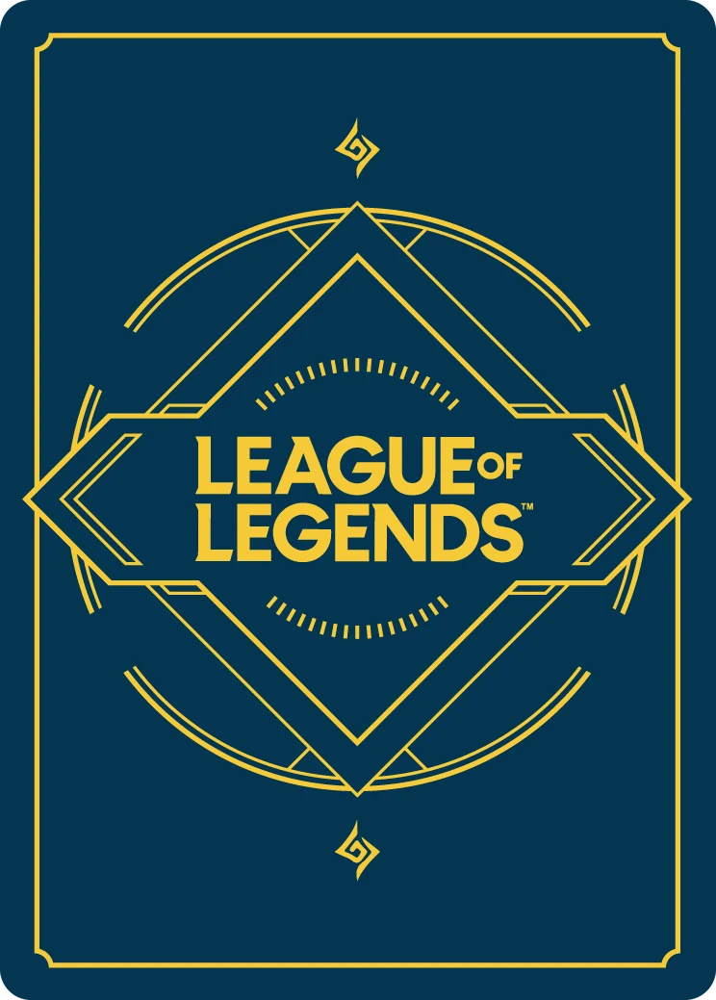
Your Legend stays beside the board all game and has an ability of its own. Its two domains decide which cards and runes can go in the deck.
The Chosen Champion is one of the 40: a champion unit of your Legend, set aside at the start so you can play it whenever you can pay for it.
Up to 3 copies of any card.
Riot's Core Rules, October 9, 2026
- 103
To play Riftbound, a player must have a Main Deck, a Rune Deck, a Champion Legend, and a number of Battlefields determined by the Mode of Play. These are collectively referred to as a player’s deck.
- 103.3.b
Your Main Deck can include up to 3 copies of the same named card.
- 103.4.a.1
Cards in the Rune Deck must be of the Domain Identity of your Champion Legend.
The board
Each player plays on a mat like this. The battlefields are where points are scored.
Your base keeps your units and gear that are not at a battlefield, and below them the runes you channel. Killed and discarded cards go to your trash. Your Main Deck and Rune Deck sit face down, apart.
In a game for two, each player puts one of their 3 battlefields in their Battlefield Zone, and the two mats face each other, so two battlefields are in play.
Riot's Core Rules, October 9, 2026
- 107.4.a
The space for each player's Champion Legend.
- 108.3.b
The space each player puts their Chosen Champion at the start of the game.
- 487.4.a
Each player provides three (3) Battlefields, included in their deck during deck building. Only 1 will be used, chosen during setup.
Setting up
Pick your battlefield, shuffle, draw 4. You may swap up to 2.
Each player puts one of their battlefields in the middle.
Legend and Chosen Champion go face up beside your base.
Shuffle your Main deck and your Rune deck, apart.
Pick who goes first at random.
Draw 4. You may set aside up to 2, draw that many, then put the set-aside cards on the bottom of your deck.
Going second, you channel 3 runes on your first turn instead of 2.
Riot's Core Rules, October 9, 2026
- 115
Determine Turn Order using any fair random method agreed on by all players.
- 116
Players each draw 4.
- 117.1
A player may choose up to two cards in their hand. They set those cards aside.
- 117.2
Then, that player draws as many cards as they set aside.
- 117.3
Finally, that player Recycles the cards that were set aside. See rule 417. Recycle for more information.
- 487.7
First Turn Process: The player going second channels an extra Rune from their Rune Deck during their first Channel Phase of the game.
A turn
A, B, C, D, then your actions, then the end.
Awaken. Ready everything you exhausted: units, Legend and runes.
Beginning. Start-of-turn effects, then score 1 for each battlefield you control.
Channel. The top 2 runes of your Rune deck go onto the board, ready.
Draw. Draw 1. There is no hand limit.
Action. Play cards, use abilities and move units, in any order, as often as you can pay.
End. End-of-turn effects, then every unit heals.
Energy and Power you add but do not spend are lost at the end of the turn.
Riot's Core Rules, October 9, 2026
- 315.1.b
1. The Turn Player readies all Game Objects they control that are able to be readied. See rule 416. Ready for more information.
- 315.2.b.2
1. The Turn Player Holds all Battlefields they Control. See rule 469. Scoring for more information.
- 315.3.b
1. The Turn Player channels 2 runes from their Rune Deck. See rule 431. Channel for more information.
- 315.4.b
1. The Turn Player draws 1.
- 167
Every player's Rune Pool empties at the start of each player's Main Phase and the end of each player's turn.
Runes
Runes pay for cards. Exhaust a rune for 1 Energy. Recycle a rune for 1 Power of its domain.
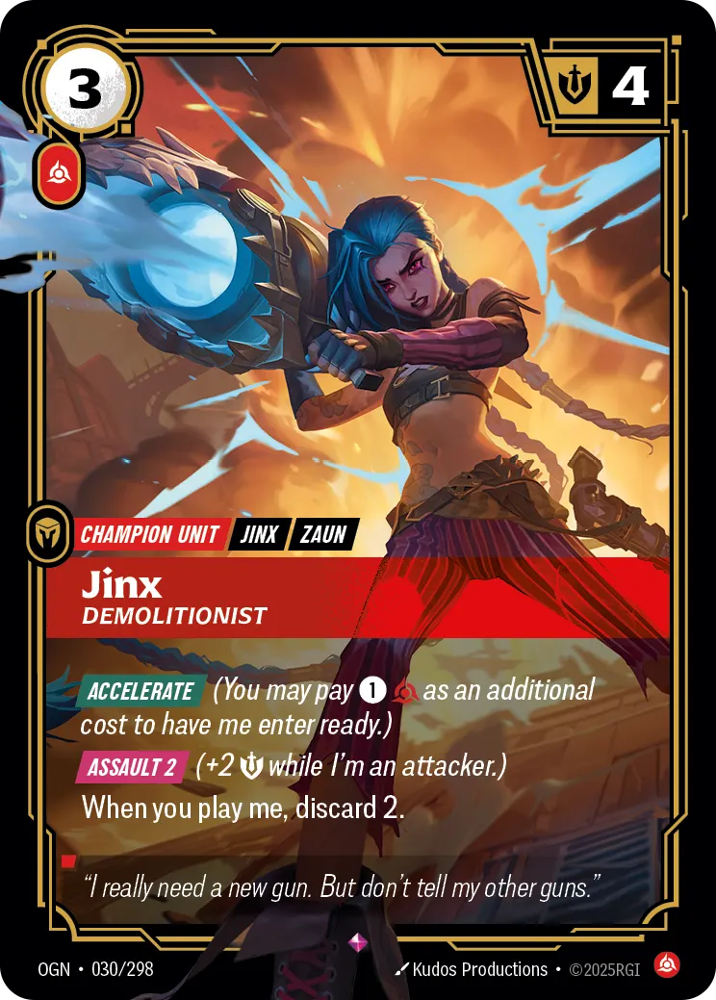
3 Energy : exhaust 3 runes, turning them sideways.
1 Fury Power : recycle 1 Fury rune.
Energy is the number in a card's top corner. Power is the domain symbol under it; a card can ask for more than one. There are six domains:
- Fury
- Calm
- Mind
- Body
- Chaos
- Order
In a card's text, Energy is a number in a circle and Power a domain symbol. Jinx's Accelerate asks more to have her enter ready. is Power of any domain.
To recycle a rune, put it on the bottom of your Rune deck. A rune you exhausted for Energy can still be recycled for Power, so one rune can pay for both.
Example: Jinx, Demolitionist costs 3 Energy and 1 Fury. Exhaust 3 runes, then recycle a Fury rune, which can be one of the three.
Riot's Core Rules, October 9, 2026
- 163.1
Energy is used to pay numeric Energy costs.
- 163.2
Power is used to pay Domain-associated Power Costs.
- 135.2.e.5
Power of any Domain is represented by a swirling rainbow symbol. Its shorthand is [A].
Units and moving
A unit arrives exhausted at your base. Once ready, it exhausts to move to a battlefield or back.
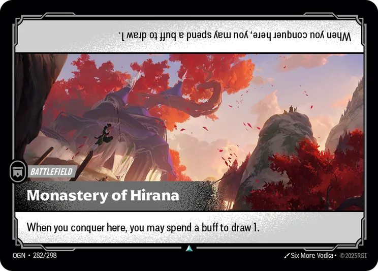
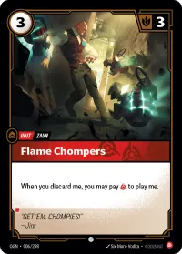
Your baseA unit's Might , in its top corner, is both the damage it deals and the damage it can take.
in a card's text means exhausting that card is part of the cost.
A unit can also enter at a battlefield you control. Units going to the same place can move together.
Move onto a battlefield with the other player's units and you fight. Move onto an empty one and you conquer it, though your opponent may answer first with an Action or Reaction card.
Riot's Core Rules, October 9, 2026
- 143.4
Units enter the Board exhausted.
- 144.2
Exhausting the Unit is the Cost for this action.
- 144.4.a
Units may move from their Base to a Battlefield.
- 144.4.b
Units may move from a Battlefield to their Base.
- 144.4.c.1
Units with Ganking may use their Standard Move to Move from Battlefield to Battlefield. See rule 810. Ganking for more information.
Fights
Move onto a battlefield the other player controls and you fight. Each side deals its total Might as damage.
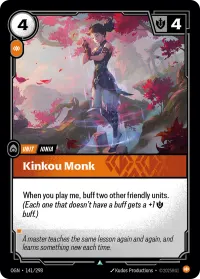
4 damage: 3 to your Flame Chompers, 1 to your Mystic Poro
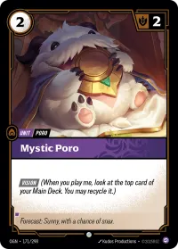
5 damage: all 5 to their Kinkou Monk
Only Mystic Poro is left: you conquer, +1 point.
"When I defend" abilities, then "When I attack" abilities.
Players take turns playing Action and Reaction cards until both pass.
Each side adds up its Might and splits that much damage among the other side. Lethal damage goes to one unit before the next, and Tank units take it first.
All damage lands at once. A unit with damage equal to its Might or more is killed.
If only attackers are left, they conquer the battlefield. If a defender is left, the attackers go back to base.
Units that are left heal.
Riot's Core Rules, October 9, 2026
- 467.2.a
Sum the Might of all Attacking Units.
- 467.2.b
Sum the Might of all Defending Units.
- 467.2.c
Starting with the Attacker, each player assigns an amount of damage equal to their summed Might among the other's Units.
- 815.1.b
It is functionally short for "I must be assigned lethal damage before any other unit with the same controller as me that does not have [Tank] during the Combat Damage step."
- 143.2.b
If a Unit ever has nonzero damage marked on it equalling or exceeding its Might, it is Killed.
Scoring
Score 1 when you conquer a battlefield and 1 when you hold one as your turn starts. 8 points wins.
- 1
- 2
- 3
- 4
- 5
- 6
- 7
- 8
Conquer +1: take a battlefield.
Hold +1: still there when your turn starts.
Each battlefield scores for you once a turn at most.
The winning point must come from holding, or from scoring every battlefield in one turn. If not, you draw a card instead.
Burn out: if you must draw from an empty Main deck, your trash is shuffled in as your new deck and an opponent gains 1 point, then you draw.
Two-on-two games play to 11.
Riot's Core Rules, October 9, 2026
- 471.1
Conquer: A player gains Control of a Battlefield they did not yet Score this turn.
- 471.2
Hold: A player maintains Control of a Battlefield they did not yet Score this turn during their Beginning Phase.
- 472
A player may only Score, from either method, once per Battlefield per turn.
- 473.1.b.1
If the player has Scored every Battlefield this turn, that player Gains the Final Point. If the player has not Scored every Battlefield this turn, that player draws a card instead.
- 194.3
The Victory Score is 8 points by default.
- 432.2.c
Chooses an opponent to gain 1 point.
At the store
Try it first
Look for a Learn-to-Play event. It is not a tournament and has no rounds: the store teaches the game, often with decks to borrow. Ask the store before you go.
Your first deck
A ready-to-play deck is the easy start. Ask your store what is in stock.
Champion Deck: one deck, ready to play.
Showdown Deck: two decks, to play a friend.
Proving Grounds: four decks, for a group.
Every deck has a Legend, a Chosen Champion, a Main deck of 40 cards (up to 3 copies of a card), 12 runes and 3 battlefields.
Signing up for events
Find the event on the Events page and tap it. Its buttons give directions, add it to your calendar, and open its event page on PlayRiftbound.com, where you register. Sign in there with a Riot account.
On the day, your pairings are on PlayRiftbound too, and you report your results on your phone. Some stores charge a small entry fee; the event shows it.
Kinds of events
Open Play: casual games at the store.
Learn-to-Play: learn the game. No rounds, not a tournament.
Nexus Nights: the weekly store night. The store picks the format, and players get a promo pack while they last.
Summoner Skirmish: competitive. Your own deck, best of 3, Swiss rounds and sometimes a top cut. Winners earn a bye at a Regional Qualifier.
Pre-Rift: a new set a week before release. You build a deck at the event from a kit (Sealed), so no deck is needed.
What to bring
Your deck, ideally in card sleeves.
Your phone, signed in to PlayRiftbound, for pairings and results.
A way to keep score.
The Tracker keeps score and the match timer, and is fine for casual play. At higher-level events, Riot's Tournament Rules ask for score kept in writing, with no phones or dice, so bring a pen and paper.
The rules
Riot's Core Rules, Tournament Rules, errata and FAQs, kept up to date.
What RAVI is
A free app for the Riftbound scene on Vancouver Island. It covers every store's events.
Setup
Save your account, add your Riot ID, turn on alerts and arrange your hub, in four steps.
Getting around
The Hub is where the app opens. Its blocks are your seven picks, and its last block, All pages, lists every page so you can go to any of them.
Every other page has the same bar along the bottom, in the same order: Hub, Go to (any page), the page's own action, and its settings.
Tap a row and RAVI shows you round it, one control at a time.
Start here